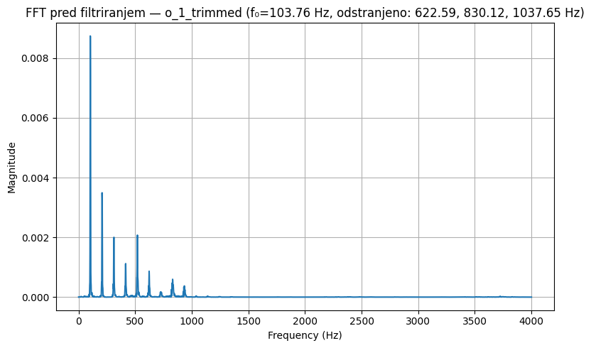
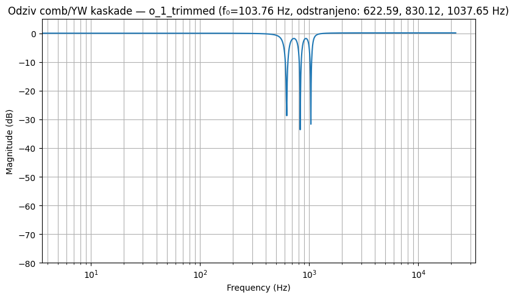
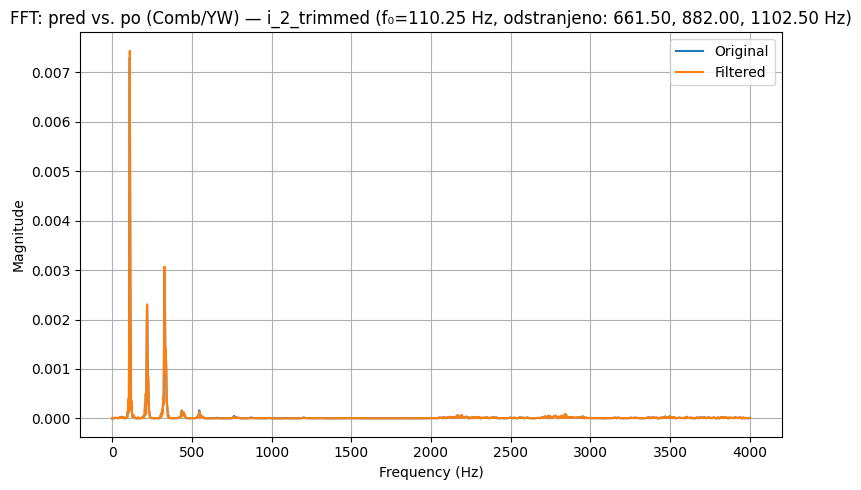
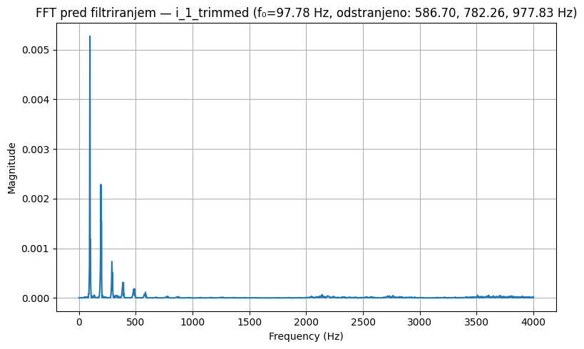

# User-configurable parameters
harmonics_to_remove = [2, 3, 6, 8, 10] # <- prilagodite po potrebi
f0_method = "autocorr" # "autocorr" | "fft_peak" | "cepstrum" | "peaks"
manual_f0_hz = None # ali npr. 120.0 za ročno nastavitev
# Comb/YW
comb_bw_hz = 100.0 # ±50 Hz -> total BW ~100 Hz
# IIR cascade
iir_family = "ellip" # "butter" | "cheby1" | "cheby2" | "ellip"
iir_order = 4 # fiksni red na odsek
iir_half_bw_hz = 10.0 # ±10 Hz
iir_rp = 0.5 # (ellip/cheby1) ripple
iir_rs = 50.0 # (ellip/cheby2/ellip) stopband attenuation
f0_log: Dict[str, float] = {}
run_log: Dict[str, dict] = {}
files = list_wavs(AUDIO_DIR)
if not files:
warnings.warn("Ni WAV datotek v /audio_data.")
for path in files:
name = os.path.splitext(os.path.basename(path))[0]
fs, x = read_wav_mono(path)
# f0
f0 = estimate_f0(x, fs, method=f0_method, manual_f0_hz=manual_f0_hz)
f0_log[name] = float(f0)
# Design comb/YW cascade
sos_comb = design_comb_cascade_sos(fs, f0, harmonics_to_remove, bw_hz=comb_bw_hz)
w_c, H_c = freq_response_sos(sos_comb, fs)
# Apply comb
y_comb = apply_sos_zero_phase(x, sos_comb)
# Design IIR cascade
sos_iir = design_bandstop_cascade_sos_simple(fs, f0, harmonics_to_remove,
half_bw_hz=iir_half_bw_hz,order=iir_order)
w_i, H_i = freq_response_sos(sos_iir, fs)
# Apply IIR cascade
y_iir = apply_sos_zero_phase(x, sos_iir)
# --- Plots (FFT and responses)
# Pre-calculate targeted harmonic freqs > 500 Hz
target_freqs = [k * f0 for k in harmonics_to_remove if k * f0 > 500.0]
target_str = ", ".join(f"{freq:.2f}" for freq in target_freqs)
# --- Plots (FFT and responses)
plot_fft(x, fs, f"FFT pred filtriranjem — {name} (f₀={f0:.2f} Hz, odstranjeno: {target_str} Hz)", fmax=min(4000, fs/2))
overlay_fft(x, y_comb, fs, f"FFT: pred vs. po (Comb/YW) — {name} (f₀={f0:.2f} Hz, odstranjeno: {target_str} Hz)", fmax=min(4000, fs/2))
overlay_fft(x, y_iir, fs, f"FFT: pred vs. po (IIR kaskada: {iir_family}, N={iir_order}) — {name} (f₀={f0:.2f} Hz, odstranjeno: {target_str} Hz)", fmax=min(4000, fs/2))
plot_filter_response(w_c, H_c, f"Odziv comb/YW kaskade — {name} (f₀={f0:.2f} Hz, odstranjeno: {target_str} Hz)")
plot_filter_response(w_i, H_i, f"Odziv IIR kaskade ({iir_family}, N={iir_order}) — {name} (f₀={f0:.2f} Hz, odstranjeno: {target_str} Hz)")
# Save audio
out_comb = os.path.join(OUT_DIR, f"{name}_combYW.wav")
out_iir = os.path.join(OUT_DIR, f"{name}_iir_{iir_family}_N{iir_order}.wav")
write_wav_int16(out_comb, fs, y_comb)
write_wav_int16(out_iir, fs, y_iir)
# Log
run_log[name] = {
"f0_hz": float(f0),
"harmonics": harmonics_to_remove,
"comb_bw_hz": comb_bw_hz,
"iir_family": iir_family,
"iir_order": iir_order,
"iir_half_bw_hz": iir_half_bw_hz,
"iir_rp": iir_rp,
"iir_rs": iir_rs,
"fs": fs,
"paths": {"in": path, "out_comb": out_comb, "out_iir": out_iir}
}
# Save logs
with open(os.path.join(OUT_DIR, "f0_log.json"), "w", encoding="utf-8") as f:
json.dump(f0_log, f, indent=2, ensure_ascii=False)
with open(os.path.join(OUT_DIR, "run_log.json"), "w", encoding="utf-8") as f:
json.dump(run_log, f, indent=2, ensure_ascii=False)
print("Končano. f0 vrednosti:")
for k, v in f0_log.items():
print(f" {k}: {v:.2f} Hz")






Končano. f0 vrednosti:
a_2_trimmed: 114.84 Hz
o_1_trimmed: 103.76 Hz
o_2_trimmed: 127.09 Hz
a_1_trimmed: 97.78 Hz
i_2_trimmed: 110.25 Hz
i_1_trimmed: 97.78 Hz